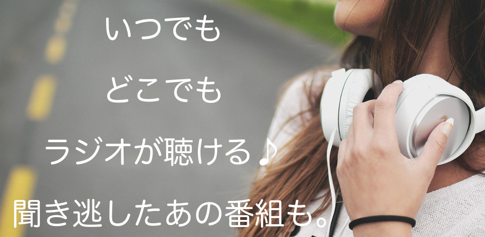

ラジのすけとは

ラジのすけは無料でラジオを予約録音できるアプリです。
キーワード指定で毎週自動予約も可能。
ラジのすけの主な機能
radikoで配信された過去1週間の番組を録音
番組表からだけでなく、番組名・出演者などを検索して録音することも可能。キーワードを登録しておけば、毎週自動予約もOK。radikoエリアフリー対応
radikoプレミアムアカウントでログインすれば、エリア外の番組も録音可能。再生はお好きなプレーヤーアプリで
再生は他のプレーヤーアプリを連携起動するので、使い慣れたお好きなプレーヤーアプリで。録音データのSDカードへの保存
SDカードへの保存もできるため、内部ストレージの空き容量が少なくても安心。放送局のお気に入り登録
お気に入りに登録すれば、どのエリアの放送局も簡単アクセス。